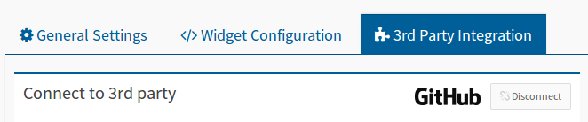
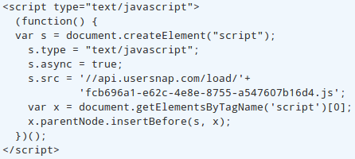
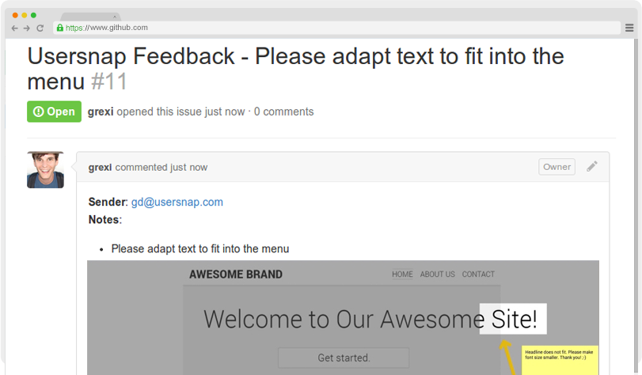

Usersnap ♥ GitHub Issues
Get bug reports with annotated screenshots (and more) right into your GitHub issues!
1. Setup
Sign up for Usersnap, create an example project and connect it with GitHub (Help).

2. Add Usersnap to your site
Copy and paste the JavaScript snippet to your page (like on this page):

3. Click on the feedback button and make some annotations
Here is an example of a website issue, just for you:
OVERFLOWS
4. Get Issues with Screenshots on GitHub Issues
Open the issues of your connected repository (See the issues section of this repository).
5. Add it to all your web projects
... and spread the word if you like it:
Tweet